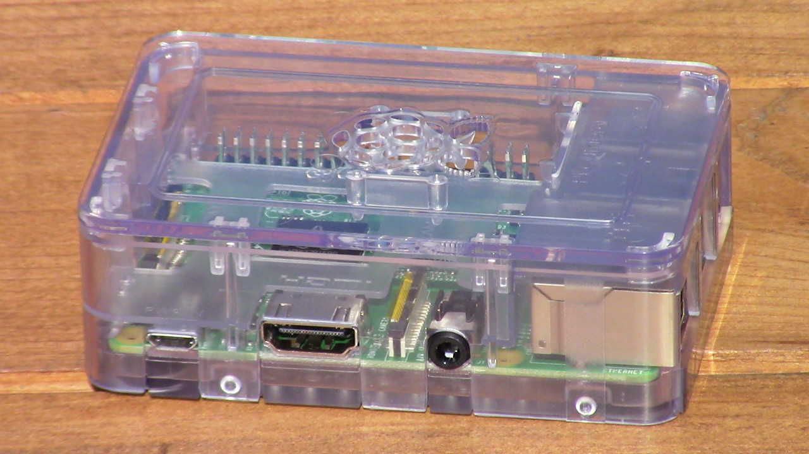

Sundry Projects
LAMUEL

LAMUEL was my college capstone project.
Click For More Information
V.O.R.P. - Version One Robotic Platform
V.O.R.P is a mobile and almost fully 3D printed prototype robot. It can drive, move its arms and head, sense distance, beep, and fall apart. There are many flaws with its design, but because it looks nice and is the first fully 3D printed robot I built, it is one of my favorite robots.
Click For More Information
RPR - Rag Pushing Robot
RPR was an attempt at a somewhat useful robot. It was intended to be a Roomba like robot that can avoid walls while cleaning a floor. It can clean both autonomously and while being controlled with an infrared remote.
Click For More Information
The Social Distance Sensor

How can I effectively judge six feet when social distancing? I can create a mask-mounted range finder that beeps when I come to close to someone.
Click For More Information
Raspberry Pi Home Web Server
I wanted to learn more back-end web development tools, but I did not want to buy server time. Instead, I decided to turn a Raspberry Pi into a miniature home web server.
Click For More Information
Using a PRUSA i3 3D Printer
According to Wikipedia, the Prusa i3 was the most used 3D printer in the world in 2016. Its low price and wide use has made it one of the most popular desktop 3D printers for both hobbyists and businesses.
Click For More Information
3D Printed LEGO Brick Separator Holster

3D printed Brick Separator Holster for FIRST LEGO League teams and other LEGO enthusiasts.
Click For More Information
3D Printed Case for CASIO DC-810 PDA

Do you use a CASIO DC-810 PDA from 1988? Do you not like its plastic sleeve? Why not 3D print a case?
Click For More Information
The Roboquad
The WowWee Roboquad was a fun little robot released by WowWee in 2007. They can still be found on eBay and various other sellers.
Click For More Information
Tri-Bot
The red robot that likes to talk.
Click For More Information